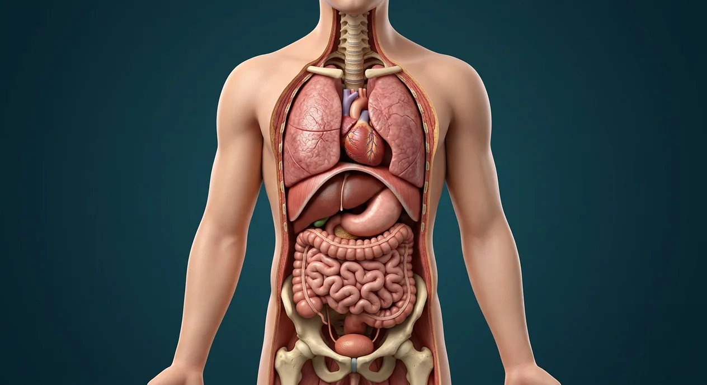

Pleural cavitiesRight hypochondriac regionRight upper quadrant (RUQ)Right lumbar regionRetroperitoneal compartmentRight lower quadrant (RLQ)Right iliac (inguinal) regionIliac crest surface landmarkCranial cavityVertebral canalDorsal body cavitySternal surface landmarkThoracic cavityMediastinumPericardial cavityVentral body cavityThoracic diaphragmEpigastric regionLeft hypochondriac regionLeft upper quadrant (LUQ)Abdominal cavityLeft lumbar regionUmbilical regionParietal and visceral peritoneumLeft lower quadrant (LLQ)Left iliac (inguinal) regionHypogastric (pubic) regionPelvic cavity- 01Dorsal body cavity
- 02Cranial cavity
- 03Vertebral canal
- 04Ventral body cavity
- 05Thoracic cavity
- 06Pleural cavities
- 07Mediastinum
- 08Pericardial cavity
- 09Thoracic diaphragm
- 10Abdominal cavity
- 11Pelvic cavity
- 12Parietal and visceral peritoneum
- 13Retroperitoneal compartment
- 14Right upper quadrant (RUQ)
- 15Left upper quadrant (LUQ)
- 16Right lower quadrant (RLQ)
- 17Left lower quadrant (LLQ)
- 18Right hypochondriac region
- 19Epigastric region
- 20Left hypochondriac region
- 21Right lumbar region
- 22Umbilical region
- 23Left lumbar region
- 24Right iliac (inguinal) region
- 25Hypogastric (pubic) region
- 26Left iliac (inguinal) region
- 27Sternal surface landmark
- 28Iliac crest surface landmark
Overview
How this part of the body works
The cranial cavity and vertebral canal form the dorsal compartment. The ventral compartment includes the thorax and abdominopelvic cavity, divided by the diaphragm. Within the thorax, the pleural sacs surround the lungs and the mediastinum contains the heart and other midline structures; pleural and pericardial spaces are potential spaces, not hollow organ chambers. The peritoneum forms serous surfaces in the abdomen; kidneys lie retroperitoneally. Four quadrants cross at the umbilicus and nine regions supply different ways to describe abdominal surface location. The clickable charts represent patient right on the viewer’s left and never claim to pinpoint a deep organ on the body photograph.
Body systemAnatomy foundations
LocationWhole body; trunk cavities and abdominal surface maps
Blood supplyVaries by organ and tissue; no single foundation-specific blood supply
InnervationVaries by structure; directional terms have no nerve supply
Clinical orientation · not organ localization
Map abdominal surface regions
Viewed facing the patient: patient right is on your left. The divisions are conceptual and not exact organ boundaries. Select a region to read its entry.
Illustrated structures
Read the anatomy, part by part
These 28 structures describe anatomy related to the chapter’s regional illustration. Each entry separates location, function and a clinical point.
01
Dorsal body cavity
Posterior continuous compartment composed of cranial and vertebral cavities, with brain and spinal cord inside.
What it doesProtects central nervous tissue.
Clinical connectionA deep nerve root is not automatically inside the peritoneal cavity.
02
Cranial cavity
Intracranial space enclosed by cranial bones, containing brain, meninges, vessels and cerebrospinal-fluid spaces.
What it doesShields the brain and supports intracranial structures.
Clinical connectionIntracranial pressure is clinically important after injury.
03
Vertebral canal
Canal within the vertebral column containing spinal cord, meninges, nerve roots and their surroundings.
What it doesProtects neural tissue while permitting spinal roots to exit.
Clinical connectionCord commonly ends near L1–L2 in adults, though level varies.
04
Ventral body cavity
Anterior body compartment conventionally divided by the diaphragm into thoracic and abdominopelvic cavities.
What it doesContains major viscera with room for organ movement.
Clinical connectionIt is a teaching subdivision, not one unbroken serous sac.
05
Thoracic cavity
Within the chest wall above the diaphragm; includes the two pleural cavities and mediastinum.
What it doesHouses lungs, heart and major vessels.
Clinical connectionA lung is not inside the mediastinum.
06
Pleural cavities
Thin potential spaces between visceral and parietal pleura surrounding each lung separately.
What it doesPermit low-friction lung movement.
Clinical connectionAir or fluid in a pleural space can impair lung expansion.
07
Mediastinum
Central thoracic compartment between the two pleural sacs, from sternum to vertebral column.
What it doesContains heart, great vessels, trachea and esophagus.
Clinical connectionThe heart is in the middle mediastinum within the pericardial sac.
08
Pericardial cavity
Potential space between visceral and parietal serous pericardium around the heart.
What it doesReduces friction as the heart beats.
Clinical connectionExcess fluid may restrict cardiac filling.
09
Thoracic diaphragm
Musculotendinous partition between thoracic and abdominopelvic cavities, with passageways for major structures.
What it doesPrincipal muscle of quiet inspiration.
Clinical connectionDiaphragmatic hernia can allow abdominal contents to enter thorax.
10
Abdominal cavity
Upper portion of abdominopelvic compartment below the diaphragm, containing much of the digestive tract and associated organs.
What it doesAccommodates abdominal organs and their motion.
Clinical connectionKidneys lie posteriorly and retroperitoneally, not inside the peritoneal sac.
11
Pelvic cavity
Lower portion of the abdominopelvic compartment within the bony pelvis, containing bladder, rectum and internal reproductive organs.
What it doesSupports pelvic viscera and their neural/vascular routes.
Clinical connectionIts boundary with the abdomen is an anatomical convention, not a watertight wall.
12
Parietal and visceral peritoneum
Parietal peritoneum lines abdominal wall; visceral peritoneum covers many abdominal organs; the cavity between is normally a potential space.
What it doesProvides sliding surfaces and forms mesenteries.
Clinical connectionRetroperitoneal organs lie behind parietal peritoneum.
13
Retroperitoneal compartment
Space posterior to the parietal peritoneum, where kidneys and parts of duodenum and pancreas are located.
What it doesSeparates posterior structures from intraperitoneal viscera.
Clinical connectionNot all abdominal organs share the same peritoneal relationship.
14
Right upper quadrant (RUQ)
Patient-right, above a horizontal umbilical line; often includes much of the liver and gallbladder.
What it doesProvides a rapid clinical location shorthand.
Clinical connectionA quadrant is not a diagnosis or exact organ outline.
15
Left upper quadrant (LUQ)
Patient-left, above the umbilicus; includes stomach and spleen regions.
What it doesProvides location shorthand for upper-left abdominal findings.
Clinical connectionAbdominal organ position varies with filling and individual anatomy.
16
Right lower quadrant (RLQ)
Patient-right, below the umbilicus; includes the cecal and appendiceal region in typical anatomy.
What it doesLocates lower-right examination findings.
Clinical connectionAppendix position varies; pain site alone does not confirm a diagnosis.
17
Left lower quadrant (LLQ)
Patient-left, below the umbilicus; includes sigmoid-colon region in typical anatomy.
What it doesLocates lower-left examination findings.
Clinical connectionCross-midline pain cannot be assigned to one organ from the chart.
18
Right hypochondriac region
Upper right of the nine abdominal regions, beneath the right costal margin.
What it doesRefines location compared with four broad quadrants.
Clinical connectionRight is the patient’s right, shown on the viewer’s left in the frontal chart.
19
Epigastric region
Central upper abdomen between right and left hypochondriac regions.
What it doesNames a midline upper-abdominal surface region.
Clinical connectionA surface region is not identical to the underlying stomach boundary.
20
Left hypochondriac region
Upper left of the nine abdominal regions beneath the left costal margin.
What it doesOrients the upper-left abdominal surface.
Clinical connectionUnderlying organs may project across several regions.
21
Right lumbar region
Right middle abdominal region, lateral to the umbilical region.
What it doesNames a lateral mid-abdominal location.
Clinical connectionDo not confuse surface lumbar region with the retroperitoneal kidney itself.
22
Umbilical region
Central middle abdominal region around the navel.
What it doesProvides a reproducible surface-location term.
Clinical connectionThe umbilicus is a surface landmark, not the location of every central visceral structure.
23
Left lumbar region
Left middle region lateral to the umbilical region.
What it doesNames a left lateral mid-abdominal surface region.
Clinical connectionThe colon position varies with body habitus and filling.
24
Right iliac (inguinal) region
Lower right of nine regions, adjacent to right iliac fossa.
What it doesLocalizes lower-right surface anatomy.
Clinical connectionAn inguinal region is not a single hernia diagnosis.
25
Hypogastric (pubic) region
Lower central abdominal region above pubis.
What it doesLocalizes lower midline surface findings.
Clinical connectionBladder fullness can change organ projection into this region.
26
Left iliac (inguinal) region
Lower left of nine regions, adjacent to left iliac fossa.
What it doesLocalizes lower-left surface findings.
Clinical connectionThe sigmoid colon may cross regional boundaries.
27
Sternal surface landmark
Palpable anterior midline breastbone used as a thoracic orientation landmark.
What it doesOrients ribs and anterior chest examination.
Clinical connectionA skin-level point does not identify a deep vessel precisely.
28
Iliac crest surface landmark
Palpable superior margin of each iliac bone at the lateral waist.
What it doesOrients pelvic and lumbar surface anatomy.
Clinical connectionIts height and palpable projection vary with posture and body habitus.
Questions people ask
Five questions about Body cavities · regions & quadrants
Short answers grounded in the structures described above. Use the illustrated guide for anatomical context.
What are the dorsal and ventral body cavities?
The dorsal compartment includes cranial and vertebral cavities containing the central nervous system. The ventral compartment is commonly divided by the diaphragm into thoracic and abdominopelvic regions.
Which body cavity contains the heart?
The heart is in the thorax, in the middle mediastinum. It is enclosed by a pericardial sac; the pericardial cavity is the thin potential space between the serous pericardial layers.
Where are the kidneys in relation to the peritoneum?
The kidneys lie retroperitoneally, posterior to the parietal peritoneum. They are not floating inside the potential peritoneal cavity.
What are the four abdominal quadrants?
A vertical and a horizontal line crossing at the umbilicus form the patient's right upper, left upper, right lower and left lower quadrants. These are surface-location guides, not exact organ outlines.
How do the nine abdominal regions differ from quadrants?
The nine-region system uses a three-by-three arrangement: hypochondriac, epigastric; lumbar, umbilical; and iliac, hypogastric positions. Right and left always refer to the patient, not the person viewing the image.
Keep exploring
Related anatomy guides
Follow these connected structures and body systems in the illustrated atlas.
 Anatomical language · planes & movementLearn patient right and left, body planes, directional terms and movements; the colored reference planes are labelled only where visibly shown.↗
Anatomical language · planes & movementLearn patient right and left, body planes, directional terms and movements; the colored reference planes are labelled only where visibly shown.↗ Stomach & intestinesThe gastrointestinal tract from oesophagus to rectum, with the villus that does the absorbing.↗
Stomach & intestinesThe gastrointestinal tract from oesophagus to rectum, with the villus that does the absorbing.↗ LungsTwo elastic, pleura-lined organs where air and blood come within 0.5 µm of each other.↗
LungsTwo elastic, pleura-lined organs where air and blood come within 0.5 µm of each other.↗ Female reproductive systemA cyclic system: ovulation, fertilisation in the tube, implantation in the endometrium.↗
Female reproductive systemA cyclic system: ovulation, fertilisation in the tube, implantation in the endometrium.↗Reference desk
Further reading
General anatomy references and related source chapters for continued study. These links do not make the digital illustrations clinical images or certify every anatomical variant.
This educational page is not medical advice and has not undergone formal clinical peer review. Spotted an error? Contact the editor.
See the structures in context
Open interactive view →Open the realistic interactive plate, label lines, focus view and self-test.